Candidate List 20260428Previous Day Next Day
Section 1: New Sources (age<1d) Section 2: Old (1-5d) sources observed last nightplaceholder
Section 1: New Afterglow/FBOT Cands Last Night (0)
Section 2: Older Sources Observed Last Night (6)
0. ZTF26aatyfau (Afterglow?) [Back to Top] [Share] [Trigger Swift] [Fritz] [Lasair]RA, Dec: 263.54464, 22.60391 17h34m10.71s, 22d36m14.08sGalactic (l, b): 46.03811, 26.55266 ext(g-r) = 0.07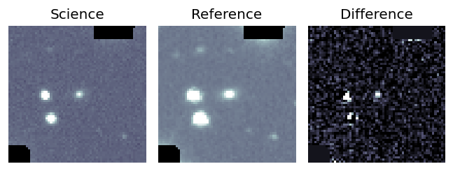
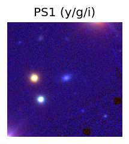
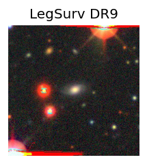
TESS: Sectors [ 25 26 52 53 79 80 118]
PS1: 0 sources in 3 arcsec
LegacySurvey: 1 sources in 3 arcsec Closest: d = 0.70 arcsec, 290.5 deg (east of north) photoz=0.1 (68% bounds 0.09, 0.13), type=SER peak abs mag = -18.81 (68% bounds -18.42, -19.28)
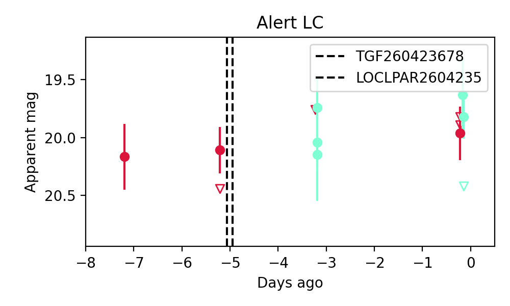
Extinction-corrected gr color:
From alerts: -0.26 +/- 0.28 mag
Consistent with synchrotron, g-r>0!
Rise Rate:
g: 0.09 mag/day
r: 0.1 mag/day
i: -99 mag/day
Fade Rate:
g: 44.02 mag/day
r: -99 mag/day
i: -99 mag/day
1. ZTF26aatyzdl (Afterglow?) [Back to Top] [Share] [Trigger Swift] [Fritz] [Lasair]RA, Dec: 93.47596, 35.93576 6h13m54.23s, 35d56m8.73sGalactic (l, b): 176.83267, 8.63379 ext(g-r) = 0.351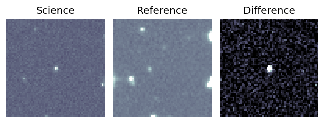
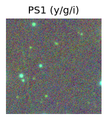

TESS: Sectors [43 44 45 60 73]
PS1: 0 sources in 3 arcsec
LegacySurvey: 0 sources in 3 arcsec
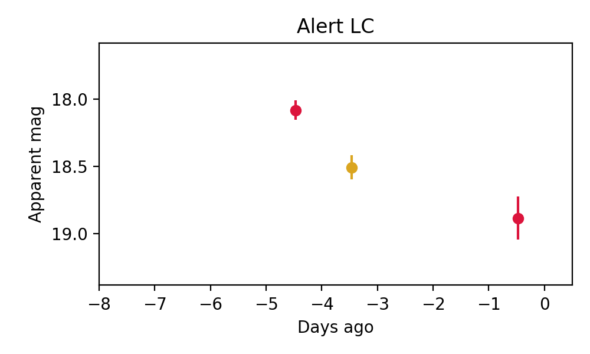
Rise Rate:
g: -99 mag/day
r: 0.5 mag/day
i: 0.13 mag/day
Fade Rate:
g: -99 mag/day
r: 0.2 mag/day
i: -99 mag/day
2. ZTF26aaugzgw (FBOT?) [Back to Top] [Share] [Trigger Swift] [Fritz] [Lasair]RA, Dec: 214.74857, 30.10426 14h18m59.66s, 30d 6m15.32sGalactic (l, b): 46.92229, 70.58647 ext(g-r) = 0.019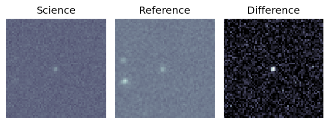
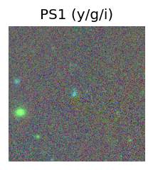
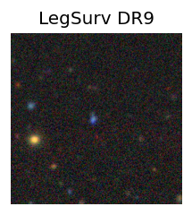
TESS: Sectors [23 50]
SDSS (10 arcsec):Found SDSS phot-z: z=0.13; peak abs mag = -19.61
PS1: 0 sources in 3 arcsec
LegacySurvey: 1 sources in 3 arcsec Closest: d = 1.36 arcsec, 112.2 deg (east of north) photoz=0.09 (68% bounds 0.06, 0.16), type=EXP peak abs mag = -18.68 (68% bounds -17.64, -20.15)
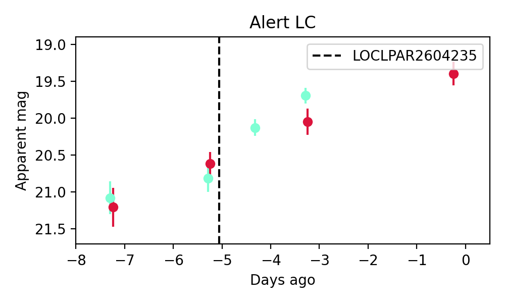
Extinction-corrected gr color:
From alerts: -0.37 +/- 0.21 mag
Rise Rate:
g: 0.39 mag/day
r: 0.25 mag/day
i: -99 mag/day
Fade Rate:
g: -99 mag/day
r: -99 mag/day
i: -99 mag/day
3. ZTF26aauiwxl (FBOT?) [Back to Top] [Share] [Trigger Swift] [Fritz] [Lasair]RA, Dec: 254.48345, -1.73815 16h57m56.03s, -1d-44m-17.33sGalactic (l, b): 17.44927, 24.1387 ext(g-r) = 0.261


TESS: Sectors 117
PS1: 1 source in 3 arcsec Closest: d = 0.56 arcsec photoz=0.24+/-0.03 peak abs mag = -21.41
LegacySurvey: 0 sources in 3 arcsec

Extinction-corrected gr color:
From alerts: 0.08 +/- 0.34 mag
Extinction-corrected gi color:
From alerts: 0.85 +/- 99 mag
Extinction-corrected ri color:
From alerts: 0.2 +/- 99 mag
Consistent with synchrotron, g-r>0!
Rise Rate:
g: -99 mag/day
r: 0.3 mag/day
i: -99 mag/day
Fade Rate:
g: -99 mag/day
r: -99 mag/day
i: -99 mag/day
4. ZTF26aauiyey (FBOT?) [Back to Top] [Share] [Trigger Swift] [Fritz] [Lasair]RA, Dec: 270.64282, 24.43166 18h 2m34.28s, 24d25m53.96sGalactic (l, b): 50.41383, 21.10412 ext(g-r) = 0.105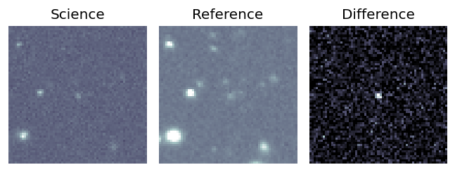
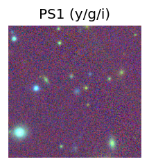
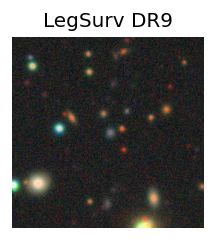
TESS: Sectors [ 53 79 80 118]
SDSS (10 arcsec):Found SDSS phot-z: z=0.22; peak abs mag = -20.77
PS1: 0 sources in 3 arcsec
LegacySurvey: 1 sources in 3 arcsec Closest: d = 0.98 arcsec, 248.9 deg (east of north) photoz=0.15 (68% bounds 0.11, 0.19), type=REX peak abs mag = -19.55 (68% bounds -18.83, -20.05)
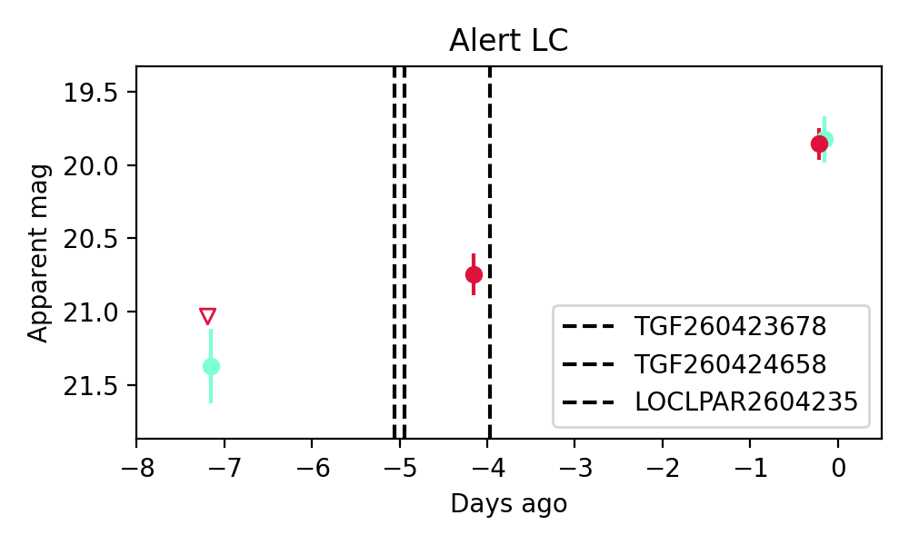
Extinction-corrected gr color:
From alerts: -0.14 +/- 0.19 mag
Consistent with synchrotron, g-r>0!
Rise Rate:
g: 0.22 mag/day
r: 0.23 mag/day
i: -99 mag/day
Fade Rate:
g: -99 mag/day
r: -99 mag/day
i: -99 mag/day
5. ZTF26aauizou (FBOT?) [Back to Top] [Share] [Trigger Swift] [Fritz] [Lasair]RA, Dec: 264.88414, 39.86442 17h39m32.19s, 39d51m51.93sGalactic (l, b): 65.28225, 30.20465 ext(g-r) = 0.036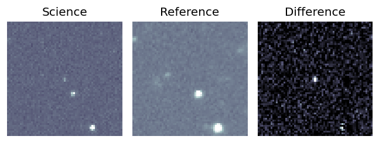
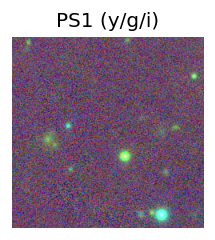
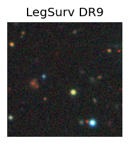
TESS: Sectors [ 25 26 40 52 53 79 80 117 118]
PS1: 0 sources in 3 arcsec
LegacySurvey: 1 sources in 3 arcsec Closest: d = 1.09 arcsec, 281.0 deg (east of north) photoz=0.93 (68% bounds 0.45, 1.19), type=REX peak abs mag = -24.05 (68% bounds -22.12, -24.72)
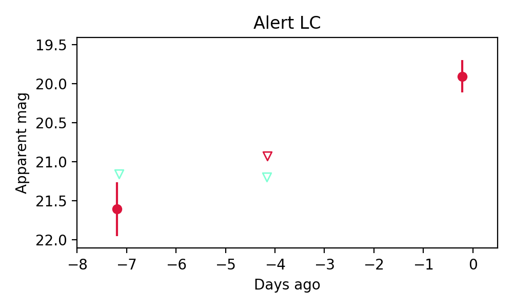
Extinction-corrected gr color:
From alerts: -0.48 +/- 99 mag
Rise Rate:
g: -99 mag/day
r: 0.26 mag/day
i: -99 mag/day
Fade Rate:
g: -99 mag/day
r: -99 mag/day
i: -99 mag/day